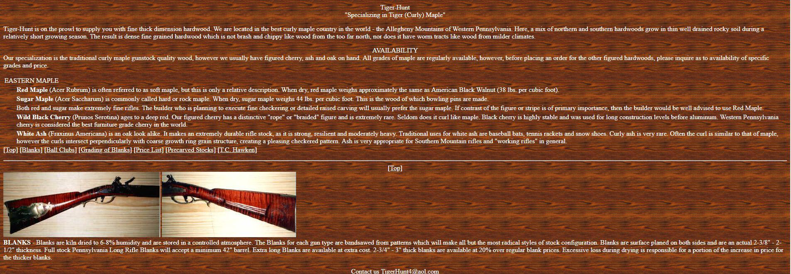

* I spent the last half of 2018 mostly working in Voice, expect to see some cool things on this page in 2019!
Aud & Emm was a fun take on a Sass refresher. It’s just a simple static one pager, but I challenged myself to really dig deep with Sass and, well frankly, over-engineer the crap out of it. Sure, it was overkill, but the goal was to learn how to use Sass for upcoming bigger projects. You can check out my code over at GitHub.
Omni-Food is just a quick refresher I did to get myself back into the swing of things with front end web development after taking a break for almost a year to work with voice applications. I'm pretty happy with the results; especially the color scheme. Not too much JavaScript in this one. Built with vanilla HTML and CSS, but I did use CSS variables for this, which was cool -- still, it's no replacement for SASS
Tiger-hunt was a full overhaul of a site that
had not been updated since the early 2000's. I had to make considerations for the clients specific user base
(non-technical individuals, generally past mid-life, who are not used to working with computers). Additionally, the
client had a very specific vision for the site. I was able to overhaul the entire site and meet and exceed the client
expectations. They have been quite pleased with the results from their store as well. Site built using WordPress and I
used Ecwid to host the store. And no, it's not about
hunting tigers... curly maple
is a type of wood, also known as tiger maple. The client makes antique rifle stocks, walking sticks, and native
american war club replicas, using curly maple.
Here is a sample of the previous site:
